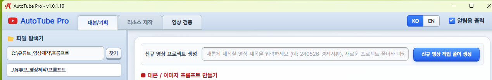
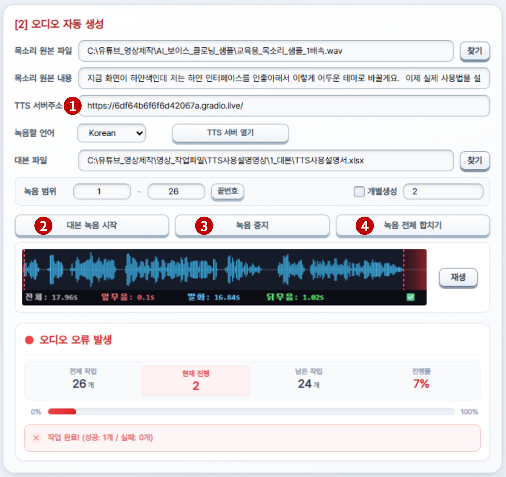
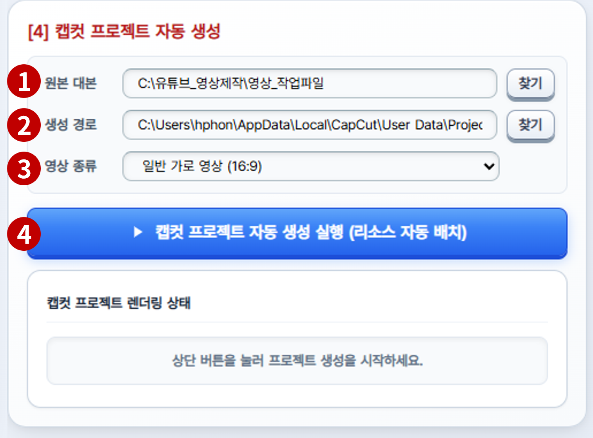

캡컷 자동화 사용 설명서 — 유튜브 영상 제작 자동화 6단계 완전 가이드
전체 공정 개요
영상 제작을 위해 이미 사용하고 계시는 AI 프롬프트를 이용하여 엑셀 파일에 대본, 이미지 생성 프롬프트, 오디오 녹음 대본을 작성해 저장합니다.
본 프로그램으로 수십 개의 이미지와 성우녹음, 자막 파일을 자동으로 생성합니다.
만들어진 리소스를 검사 후 타임라인까지 적용된 CapCut 작업 파일을 자동으로 생성합니다.
사용자의 기호에 맞게 영상 효과를 추가하거나 렌더링하여 영상을 완성합니다.
※ 설명 내용이 많아 복잡해 보일 수 있습니다. 기능별로 구분해서 하나하나 따라하시면 쉽게 이해가 될 것입니다.
본 프로그램으로 수십 개의 이미지와 성우녹음, 자막 파일을 자동으로 생성합니다.
만들어진 리소스를 검사 후 타임라인까지 적용된 CapCut 작업 파일을 자동으로 생성합니다.
사용자의 기호에 맞게 영상 효과를 추가하거나 렌더링하여 영상을 완성합니다.
※ 설명 내용이 많아 복잡해 보일 수 있습니다. 기능별로 구분해서 하나하나 따라하시면 쉽게 이해가 될 것입니다.
준비
폴더 구조 설정
제공 패키지 설치 · C: 드라이브 배치
↓
STEP 1
대본 / 기획
프롬프트 편집 · 엑셀 파일 확인
→
STEP 2
대본 엑셀 준비
필수 시트명 · 열 제목 규칙
↓
STEP 3
이미지 자동 생성
Gemini 무인 자동화
2_이미지 폴더 저장
2_이미지 폴더 저장
STEP 4
오디오 자동 생성
무료TTS 큐웬(Qwen) TTS
3_오디오_자막 저장
3_오디오_자막 저장
STEP 5
자막 자동 생성
SRT 추출
타임코드 동기화
타임코드 동기화
↓
STEP 6
검증 & 완성
통합 QC 검수 · 캡컷 자동화 1초 조립
폴더 구조 설정
새 영상 작업을 시작할 때는 버튼 하나로 프로젝트 폴더를 자동 생성할 수 있습니다.
신규 프로젝트 시작하기
1
영상 제목 입력 후 버튼 클릭
- 대본/기획 탭 상단 입력란에 영상 제목을 입력한 후 [신규 영상 작업 폴더 생성] 버튼을 클릭합니다.

▲ 대본/기획 탭 상단 — 신규 영상 프로젝트 생성 영역 (그림10)
2
탐색기에서 폴더 구조 확인 후 완료
- 버튼 클릭 후 탐색기가 자동으로 열리며, 아래와 같은 폴더 구조가 생성됩니다.
- 대본 엑셀 파일 이름도 입력한 영상 제목으로 자동 변경되어
1_대본\폴더 안에 저장됩니다. - 폴더 구조가 아래와 같이 확인되면 준비 완료입니다.
폴더 구조
C:\
유튜브_영상제작\반드시 C: 드라이브에 위치
영상_작업파일\
어닝시즌에살아남기\← 프로젝트명 (자유롭게 설정)
1_대본\STEP 1 · 2엑셀 대본 파일 보관
2_이미지\STEP 3자동 생성 이미지 저장
3_오디오_자막\STEP 4 · 5음성·자막 파일 저장
| 폴더 | 용도 | 자동 저장되는 파일 |
|---|---|---|
| 📂 1_대본\ | 대본 엑셀 파일 저장 | 엑셀 대본 파일 (.xlsx) |
| 📂 2_이미지\ | AI로 자동 생성된 이미지 저장 | 01.png, 02.png, 03.png … |
| 📂 3_오디오_자막\ | TTS 음성 파일 및 자막 파일 저장 | 001.wav … 합본.wav, 자막.srt |
주의
프로젝트 폴더는 반드시 C: 드라이브에 생성됩니다. 다른 드라이브에서는 자동화가 동작하지 않습니다.
엑셀 파일 필수 구조 규칙 필수
이미지 자동 생성과 TTS 오디오 녹음이 정상 동작하려면, 아래 규칙을 반드시 준수하여 엑셀 파일을 만들어야 합니다.
이 단계를 시작하기 전에
AI가 생성한 대본 내용
이 단계가 끝나면
올바른 구조의 엑셀 파일 (.xlsx)

▲ MS Excel — 필수 시트명 및 열 제목 확인 화면 (그림3)
각 번호별 기능 설명
1
대본 시트 — 메인 대본 내용 구성
- 영상의 메인 대본 내용이 담긴 기본 시트입니다. 사용자가 관리하는 내용으로 자유롭게 구성하시면 됩니다.
- 단, 자동 이미지 생성을 위해 "이미지 생성 프롬프트" 열은 반드시 포함되어야 합니다.
2
"이미지 생성 프롬프트" 열 제목 필수
- 이미지 자동 생성 시 프로그램이 이 열에서 프롬프트를 읽습니다.
- 열의 위치는 어디든 상관없지만, 열 제목은 정확히 "이미지 생성 프롬프트"여야 합니다.
3
성우녹음 시트 필수
- TTS 오디오 생성 시 이 시트의 텍스트를 읽어 음성을 생성합니다.
- 시트 이름은 반드시 "성우녹음" 4글자여야 합니다.
- TTS 오디오를 생성할 열 이름은 반드시 "성우녹음대본"으로 설정하세요.
- 제공되는
AI성우_녹음대본_생성프롬프트.txt파일을 참고하세요.
핵심설명
시트 이름은 반드시 "성우녹음" — 글자 수·띄어쓰기 모두 정확해야 합니다.
열 제목은 반드시 "이미지 생성 프롬프트" — 유사 표현은 인식 불가입니다.
위 조건 미충족 시 이미지·오디오 생성이 전혀 동작하지 않습니다.
파일 탐색기 & 텍스트 에디터
프로그램 실행 후 첫 번째 탭입니다.
1_대본\ 폴더에 저장된 프롬프트 .txt 파일을 불러와 간단히 확인하고 수정·저장할 수 있는 간이 편집기입니다. 전체 복사 버튼으로 내용을 복사해서 ChatGPT·Claude 등 AI 툴에 붙여넣으면 대본이나 이미지 프롬프트를 추출할 수 있습니다.
이 단계를 시작하기 전에
1_대본\ 폴더에 프롬프트 .txt 파일
이 단계가 끝나면
AI로 생성된 대본 내용 (복사 완료)

▲ 대본/기획 탭 — 텍스트 에디터 화면 (그림1)
각 번호별 기능 설명
1
대본/기획 메인 탭
- 상단 탭 바에서 대본/기획 탭이 선택된 상태입니다.
2
프롬프트 폴더 경로 입력
- 찾기 버튼으로
1_대본\폴더를 선택합니다. - 경로 변경 시 하단 파일 목록이 자동으로 갱신됩니다.
3
파일 탐색기 목록
- .txt 파일 더블클릭 → 오른쪽 텍스트 에디터에 내용 로드
- 폴더 더블클릭 → 해당 폴더로 이동 / ... 더블클릭 → 상위 폴더로 이동
4
텍스트 에디터 / 엑셀 그리드 이너 탭
- 텍스트 에디터: 프롬프트 파일 편집 및 전체 복사
- 엑셀 그리드: 대본 엑셀 파일 내용 확인 및 간편 편집
핵심설명
전체 복사 버튼 → AI에 붙여넣기 → 대본 생성 후 엑셀의
1_대본\ 폴더에 저장하는 흐름으로 활용합니다.저장 버튼으로 편집 내용을 원본 파일에 반영합니다. 저장하지 않으면 변경사항이 사라집니다.
엑셀 그리드 편집
탐색기에서 .xlsx 파일을 더블클릭하면 이 탭으로 자동 전환됩니다. AI가 생성한 대본 엑셀 파일을 내장 그리드에 로드하여 검토·보정하는 곳입니다.

▲ 대본/기획 탭 — 엑셀 그리드 화면 (그림2)
각 번호별 기능 설명
1
엑셀 그리드 탭 활성화
- 탐색기에서 xlsx 파일 더블클릭 시 자동으로 이 탭이 선택됩니다.
2
자동 정렬할 열 선택 드롭다운
- 열 너비와 행 높이를 기준으로 맞출 열(column)을 선택합니다. (예: 성우녹음대본)
3
자동 맞춤 버튼
- 선택한 열의 텍스트 길이에 맞게 열 너비·행 높이가 자동 최적화됩니다.
4
번호 정렬 버튼
- 행 추가·삭제 후 어긋난 순번을 1부터 재정렬합니다.
- 단, 첫 번째 열 이름에 '번호' 또는 'no'가 포함된 경우에만 작동합니다.
5
하단 시트 탭 (대본 / 성우녹음)
- 엑셀 파일의 시트 목록이 하단에 표시됩니다.
- 성우녹음 시트: TTS 녹음의 필수 시트입니다. (STEP 1 규칙 참고)
이미지 자동 생성 및 동영상 적용 방법
리소스 제작 탭 → [1] 이미지 자동 생성 섹션입니다. 엑셀의 "이미지 생성 프롬프트" 열 내용을 기반으로 Google Gemini AI가 이미지를 순차적으로 자동 생성하여
2_이미지\ 폴더에 저장합니다.
이 단계를 시작하기 전에
엑셀 대본 파일 + 캐릭터 시트 (.png)
이 단계가 끝나면
2_이미지\ 폴더에 01.png, 02.png …

▲ [1] 이미지 자동 생성 패널 — 16% 진행 중 (그림4)
각 번호별 기능 설명
1
작업 파일 경로 & 캐릭터 이미지 경로
- 작업 파일 경로: 이미지를 생성할 엑셀 대본 파일을 선택합니다. (
1_대본\폴더 안의 .xlsx 파일) - 캐릭터 이미지: 영상 전체 화풍과 캐릭터를 통일하기 위한 기준 이미지(.png)입니다.
2
생성 범위 설정 & 끝번호 확인
- 엑셀 파일 지정 시 시작~끝 번호가 자동으로 채워집니다.
- 개별생성: 특정 이미지만 다시 만들 때 번호를 직접 입력합니다.
3
무료 이미지 생성 — 제미나이웹 컨트롤 방식
- 구글 로그인: Gemini AI는 Google 계정 기반으로 동작하므로 작업 전 1회 로그인이 필요합니다.
- 이미지 자동 생성 시작: 버튼 클릭 후 자리를 비워도 자동으로 진행됩니다.
- 완성 이미지는
2_이미지\폴더에01.png,02.png형식으로 자동 저장됩니다.
4
유료 이미지 생성 — 구글 API 이용 방식
- 구글 API 키 저장 파일 지정: 구글에서 생성하신 개인별 API키 딱 한 줄만 텍스트 파일로 저장하신 후, 파일을 선택해 주세요.
- 완성 이미지는
2_이미지\폴더에 자동 저장됩니다.
5
진행상태 패널
- 전체 / 현재 진행 / 남은 작업 / 진행률(%)을 실시간 표시합니다.
6
실시간 이미지 미리보기
- 생성 완료된 이미지가 하단에 즉시 표시됩니다. 품질을 실시간으로 확인하세요.
동영상 추가 기능
생성된 이미지로 동영상을 만드신 후, 이미지가 있는 폴더에 이미지 대신 mp4 파일로 저장하시면 됩니다. 단, 동일 이름으로 이미지와 영상이 2개 존재하면 안 됩니다. 예: test_5.png → test_5.mp4로 저장 후 test_5.png 제거.
핵심설명
구글 로그인은 최초 1회만 필요합니다. 이후 자동 유지됩니다.
이미지 생성 중에 STEP 4 오디오 생성을 동시에 진행하면 전체 시간을 단축할 수 있습니다. 단, PC 성능에 따라 동시 작업이 어려울 수 있습니다.
생성된 이미지는
2_이미지\ 폴더에 자동 저장됩니다. 별도 파일명 변경이 필요 없습니다.STEP 4 시작 전 — 기본 개념 이해
TTS란 무엇인가요?
TTS(Text-to-Speech)는 텍스트를 음성으로 변환하는 기술입니다. 오토튜브 AutoTube Pro는 무료TTS 엔진인 큐웬(Qwen) TTS 모델을 사용하여 제공하신 목소리 샘플과 거의 동일한 억양·톤으로 대본을 읽어줍니다.
왜 Google Colab을 사용하나요?
큐웬(Qwen) TTS 모델은 고품질 음성을 만들기 위해 강력한 컴퓨팅 자원이 필요합니다. Google Colab은 구글이 무료로 제공하는 클라우드 서버로, 내 PC 성능에 부담을 주지 않으면서 고품질 무료TTS를 사용할 수 있습니다.
전체 동작 방식
Colab에서 큐웬(Qwen) TTS 서버를 실행하면
gradio.live 웹 주소가 생성됩니다. 오토튜브 AutoTube Pro가 이 주소로 대본 텍스트를 전송하면 Colab 서버가 음성을 생성해서 돌려보냅니다.
AutoTube Pro
→
대본 텍스트 전송
→
Colab 큐웬(Qwen) TTS
→
AutoTube Pro 저장
전체 자동화 흐름이 궁금하다면 → 메인 페이지 작동방식 보기
1) AutoTube Pro — 오디오 준비 설정
오디오 생성 전 AutoTube Pro에서 먼저 필요한 정보를 설정하는 단계입니다. 시작 전에 10초 정도의 깨끗하게 녹음된 자신의 목소리를 WAV 파일로 준비합니다.

▲ [2] 오디오 자동 생성 패널 — 상단 설정 영역 (그림5)
각 번호별 기능 설명
1
TTS 생성에 필요한 학습용 목소리 샘플 파일 선택
2
샘플 파일 녹음 내용이 기입된 텍스트 파일 선택
3
현재는 한글만 지원합니다.
4
TTS로 생성할 대본이 저장된 엑셀 파일 선택
5
TTS로 생성할 대본행의 번호 지정 (자동 생성 범위)
6
개별 생성이 필요할 때만 체크 표시를 ON하여 사용합니다. 대본의 행 번호를 콤마(,)로 구분해서 입력합니다.
7
위의 내용을 모두 설정하신 후 TTS 서버를 열어 녹음 준비를 합니다.
2) Google Colab — 큐웬(Qwen) TTS 서버 가동 방법
Google Colab은 구글이 제공하는 무료 클라우드 컴퓨팅 환경입니다. 내 PC 성능에 영향을 주지 않고 무료TTS 엔진 큐웬(Qwen) TTS 서버를 가동할 수 있습니다.

▲ Google Colab — 큐웬(Qwen) TTS 서버 가동 화면 (그림6)
각 번호별 기능 설명
1
"TTS 서버 열기 버튼"을 누르면 자동으로 이 화면이 열립니다.
2
TTS 서버를 가동할 시스템을 선택합니다. 수정 → 노트설정 → T4 GPU → 적용 순으로 선택합니다.
3
화살표를 눌러 서버 기동 명령을 실행합니다.
4
10초~수십초 후 설치 완료 메시지 출력이 나오는지 확인합니다.
5
화살표 실행 버튼을 눌러 서버에 큐웬(Qwen) TTS를 실행시킵니다.
6
서버가 준비될 때까지 기다립니다. (1~3분) 대기 후 URL이 출력되면 서버 준비가 완료된 것입니다. 2번째 서버접속용 URL을 마우스를 이용해 정확하게 복사합니다.
3) AutoTube Pro — 오디오 녹음 실행
Colab 서버 가동 후 AutoTube Pro로 돌아와 오디오 녹음을 실행합니다.

▲ [2] 오디오 자동 생성 패널 — 녹음 실행 영역
각 번호별 기능 설명
1
위에서 복사한 TTS 서버 접속용 주소를 입력합니다. 참고: 서버 생성 시마다 매번 변경됩니다.
2
모든 설정이 완료된 후 녹음을 시작합니다. (녹음 범위 설정 후 자동생성 또는 개별생성 녹음)
3
녹음 중 중지하는 기능이며, 중지 후 이어서 녹음이 안 되니 참고하세요.
4
엑셀 대본의 모든 행은 개별 파일로 녹음됩니다. 자막 생성을 위해 1개의 파일로 합치는 기능입니다.
핵심설명
목소리 원본과 복사할 내용을 정확히 입력해야 자연스러운 억양이 생성됩니다.
모든 컷 녹음 완료 후 반드시 "녹음 전체 합치기"를 실행합니다. 이 버튼을 누르지 않으면 STEP 5 자막 생성이 불가합니다.
Colab 세션 만료 시 오류 발생 → 셀2를 재실행하여 새 주소를 발급받아 붙여넣으세요.
[중요] TTS 서버 수동 종료 필수 안내
오토튜브는 사용자의 연속적인 작업을 고려하여 서버를 자동으로 종료하지 않습니다. 따라서 TTS 생성 완료 후 또는 더 이상 사용하지 않을 때는 반드시 직접 서버를 종료해 주시기 바랍니다.
(무료 사용자: 사용 제한 불이익 방지 / 유료 사용자: 불필요한 비용 차감 방지)
종료 방법: 상단 메뉴 [런타임] → [런타임 연결 해제 및 삭제]
(무료 사용자: 사용 제한 불이익 방지 / 유료 사용자: 불필요한 비용 차감 방지)
종료 방법: 상단 메뉴 [런타임] → [런타임 연결 해제 및 삭제]
Whisper 자막 자동 생성 & 타임코드 동기화
리소스 제작 탭 → [3] 자막 자동 생성 및 보정 섹션입니다. 합본.wav 오디오를 Whisper AI가 분석하여 각 컷의 정확한 시작·끝 시간을 추출하고, SRT 자막 파일과 엑셀 타임스탬프를 자동으로 생성합니다.

▲ [3] 자막 자동 생성 및 보정 패널 — 33% 진행 중 (그림7)
각 번호별 기능 설명
1
원본 대본 & 합친 녹음 경로 지정
- 원본 대본:
1_대본\폴더의 엑셀 파일을 지정합니다. - 합친 녹음:
3_오디오_자막\폴더의합본.wav를 지정합니다.
2
전체 자막 SRT 만들기 → 엑셀에 이미지 배치 타임 적용 두 버튼 모두 클릭
- 1단계 — 전체 자막 SRT 만들기: Whisper AI가 오디오를 분석해 각 컷의 시작·끝 시간을 담은 SRT 파일을 생성합니다.
- 2단계 — 엑셀에 이미지 배치 타임 적용: 추출된 시간 정보를 엑셀 파일의 타임 열(J열)에 자동으로 기록합니다. 이 정보가 있어야 CapCut에서 이미지가 정확한 타이밍에 배치됩니다.
- 두 번째 버튼을 반드시 클릭해야 합니다.
3
자막 작업 진행상태 패널
- 진행률(%)과 현재 처리 중인 자막 텍스트를 실시간으로 표시합니다.
4
자막수정필요 입력 필드
- 발음이 불명확하거나 자막이 잘못 인식된 컷 번호를 기록합니다. (예: 1, 3, 5)
- STEP 6 영상 검증 탭에서 해당 컷만 재작업할 때 참조됩니다.
핵심설명
SRT 만들기 후 반드시 "엑셀에 이미지 배치 타임 적용"도 클릭해야 합니다.
두 번째 버튼 미클릭 시 CapCut에서 이미지 클립 타이밍이 잘못 배치됩니다.
자막수정필요에 번호를 기록해두면 STEP 6에서 해당 컷만 정확히 재작업할 수 있습니다.
영상 리소스 검증 (QC)
영상 검증 탭입니다. 이미지·오디오·자막을 한 화면에서 동기화 재생하며 품질을 검수합니다. 문제가 있는 컷만 체크박스로 마킹하고, 해당 STEP으로 돌아가 개별 재작업하면 됩니다.
이 단계를 시작하기 전에
2_이미지\ + 합본.wav + 자막.srt + 엑셀 대본
이 단계가 끝나면
캡컷 자동화 완성 프로젝트 파일

▲ 영상 검증 탭 — 통합 QC & 캡컷 자동화 조립 화면 (그림8)
검수 시 확인해야 할 항목
✓
이미지 확인
이미지가 해당 대본 내용과 맞는가 / 품질이 양호한가
✓
오디오 확인
발음이 자연스러운가 / 잡음이나 끊김이 없는가
✓
자막 확인
자막 타이밍이 오디오와 일치하는가 / 텍스트가 정확한가
각 번호별 기능 설명
1
영상 검증 메인 탭
- 상단 탭 바에서 영상 검증 탭을 선택합니다.
2
대본 불러오기
- 엑셀 파일 경로 입력 후 대본 불러오기를 클릭합니다.
- 각 컷의 대본·자막·썸네일·오디오 재생 버튼이 그리드에 표시됩니다.
- 이미지 누락 컷 → 빨간 "없음" 뱃지 / 자막 누락 컷 → "자막없음" 뱃지로 즉시 식별합니다.
3
재생 구간 설정
- 자동 재생의 시작~끝 컷 번호를 지정합니다.
4
자동 재생 / 재생 초기화 / 변경된 대본·자막 저장
- 자동 재생: 컷을 순서대로 재생합니다. 우측 패널에서 이미지·파형·자막이 동기화 갱신됩니다.
- 변경된 대본/자막 저장: 검수 중 직접 수정한 내용을 엑셀에 저장합니다.
5
체크박스 초기화
- 재작업 완료 후 마킹된 체크박스를 일괄 초기화합니다.
6
CapCut 프로젝트 생성 경로
- CapCut 프로젝트 파일이 저장될 경로입니다. 기본값은 CapCut의 기본 프로젝트 폴더입니다.
7
캡컷 자동화 프로젝트 생성 실행 최종 단계
- 모든 검수 완료 후 이 버튼을 클릭합니다.
- 단 1초 안에 이미지·오디오·SRT 자막 타임코드가 CapCut 프로젝트에 자동 주입됩니다.
핵심설명
문제 발견 시 해당 컷의 오른쪽 체크박스 클릭 → 분홍색으로 마킹 → 해당 STEP으로 돌아가 개별생성으로 재작업합니다.
전체 공정을 처음부터 재실행할 필요가 없습니다. 문제 컷만 선택적으로 재작업하면 됩니다.
CapCut 실행 버튼(7번) 클릭 전 생성 경로(6번)를 반드시 확인하세요.
캡컷 자동화 — 1초 완성 타임라인
캡컷 자동화 프로젝트 생성이 완료되면 CapCut을 실행합니다. 수십 개의 이미지 클립·오디오·SRT 자막이 정확한 타이밍에 배치된 완성형 타임라인을 바로 확인할 수 있습니다.

▲ 캡컷 자동화 1초 생성
1
대본 엑셀 파일을 선택합니다.
2
캡컷 생성 경로를 나타내며, 이미 설정된 상태임으로 변경하지 마시길 바랍니다.
3
제작하실 16:9 롱폼영상 또는 9:16 쇼츠 영상을 선택합니다.
4
버튼을 누르면 1초만에 타임라인에 맞게 모든 리소스가 배치된 캡컷 자동화 프로젝트가 생성됩니다.

▲ CapCut — 캡컷 자동화 완성 타임라인 화면 (그림9)
핵심설명
이미지 클립이 오디오 싱크에 맞춰 자동 배치되고, SRT 자막도 정확한 타임코드에 삽입된 상태입니다.
이후 작업은 트랜지션 효과, 배경음악 레벨, 브랜딩 요소 등 연출 디테일만 마무리하면 됩니다.
반복 배치 작업에서 완전히 해방됩니다. 창작에만 집중하세요.